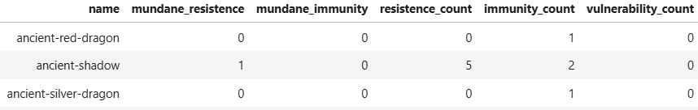

What Makes a Monster?
An exploration of monster power level quantification in Dungeons and Dragons
Premise
In Dungeons & Dragons (or D&D), a group of players make characters and go on adventures in a fantasy world controlled by a special player called the Dungeon Master, or DM. The DM has countless responsibilities in the game, including playing as the enemies, building the world, writing the story, improving to keep the story on track, and designing combat encounters to name just a few.
I've been DMing for years, and there's a consistent problem I've faced while setting up stories. The creators of D&D provide several hundred generic monsters to add into your games. These monsters have a Challenge Rating (or CR) to describe how powerful they are and help DMs design fair encounters for their group's power level.
But it won't be long before your game calls for a custom designed monster. The trouble is, it's very difficult to evaluate how powerful the monsters are. I can't tell you how many times I've made a monster thinking it was fair, only for my players to immediately crush it, or for the monster to be practically unkillable. So, it would be very useful to be able to determine what the CR of a monster should be given its abilities.
This page will take you through my process of building a linear regression model to determine exactly that.
Question: How do we relate a monster's stats to its Challenge Rating?
Part 1: The Data
A dataset containing information on every generic monster in D&D* is hosted on Kaggle.com. This table has 762 rows, each representing a monster, but some of these columns will need to be discarded due to their lack of information. The table has 17 columns, tracking different information about the monsters.
*Dungeons and Dragons 5th edition, 2014 ruleset
| Column Name |
Format |
Meaning |
Usefulness |
| Name |
text |
A monster's common name |
Simply used to refer to a particular monster |
| URL |
text (web address) |
A link to a well formatted webpage with more detailed information about each monster, hosted on aideed.org. |
We will use these links for web scraping to supplement our data with some critical information. |
| Challenge Rating |
fractions (stored as text) |
A monster's approximate power level, as decided by the game's designers. |
This is our regression target. Using the existing values in this data, we'll train a model to make informed estimations of this value for a given model. |
| Type |
text |
Monsters in D&D are sorted into categories like 'humanoids', 'dragons', 'beasts', and 'oozes'. |
Using the creature type, we can get a rough idea of a monster's abilities, like all dragons having a breath weapon. This may help us estimate how powerful a monster is. |
| Size |
text (one of six categories) |
Refers to a monster's 'footprint' on a 2d game board. |
Size has positives and negatives to monster power, but either way it's quite important to how a monster acts and what it can do. |
| AC & HP |
integers |
To slightly simplify, these two numbers (Armor Class and Hit Points) describe how hard a monster is to defeat. |
These two factors are some of the more influential to a monster's power level, and will be critical for our regression. |
| Speed (Types) |
text (list of types) |
This list of movement categories describes how many ways a monster can move, like flying or swimming. |
A monster that can fly naturally has some large advantages, as does a swimming monster in the right setting. These abilities can decide the outcomes of battles, and may help decide a monster's power level. |
| Legendary |
text |
A 'Legendary' monster has several additional, remarkably strong powers. |
Legendary powers turn a monster from a challenge to a crisis, and no doubt have a strong hand in a monster's power. |
| Stats (Strength, Dexterity, Constitution, Intelligence, Wisdom, Charisma) |
integers (well, floats, but with no decimal values) |
These numbers are the bread and butter of any D&D monster or character, and describe what a monster is good and bad at. |
These stats are the most fundamental aspects of a monster's power, and will help us differentiate the more and less powerful. |
Part 2a: Data Cleaning & Supplementation
The dataset has several issues that need to be solved before it can be used for statistical analysis.
First and foremost, the data is full of null values.

In this screenshot of the raw data, we can see that many of the monsters have missing values for their URL, Legendary status, Speed, and all of their stats ('NaN' signifying missing data, or 'Not a Number').
It turns out, these missing values represent two very different issues. The Legendary and Speed columns use a typical formating structure, where NaN represents a zero (or 'empty') value rather than a null value.

This means that the data is usable and simply needs to be formatted. For the Speed value, this is simple: we fill in the NaN values with empty strings. The Legendary column is slightly more involved. Because a monster can only be legendary or not legendary, the column should be converted to boolean (true and false) data, with the NaN values becoming false and 'legendary' values becoming true. Additionally, we'll represent these boolean values with zeros (for false) and ones (for true).

The NaN values in the URL and Stat columns are unfortunately genuine nulls. A NaN in the Strength column doesn't mean 'zero strength', it means 'I don't know'. This is much harder to resolve. However, notice that rows with NaN URLs also have all their stats as NaN, and looking at the rest of the data, this all or nothing pattern holds.
There are 362 rows with null URLs and Stats in the data. While the missing Stats are inconvenient, the missing URLs are daming, as they'll prevent us from pulling more detailed information from the web for those monsters. Due to this, I've decided to simply omit these rows and leave only those with valid URLs. This leaves 400 rows representing 400 monsters.

With the null values taken care of, the rest of the formatting is fairly simple. The stats can only be integer values, so we'll convert those six columns to integer data. The type values contain lots of detailed information that we can simplify by omitting all but the first word of each value. Then there's the oddities of the CR format...
In D&D, monsters can have one of 34 Challenge rating values: 1/8, 1/4, 1/2 or any integer from 0 to 30. This unusual system is convenient for designing combat encounters, but cumbersome here. We'll convert these to float (decimal) values to make them simpler to use. When predicting a monster's CR after our model is ready, we can simply round the predicted decimal value to the nearest valid CR.

With this, we have a range of cleaned, usable values, but not many of them. We're lacking some important information about the monsters, most importantly, information about how they attack. We have AC and HP to represent how hard they are to defeat, but each monster has a range of unique abilities they can use to attack the players which is the critical second half of a monster's power. However, I can't blame the creator of this data set for not including this data, as it's not nearly so simple to represent.
For a slightly more in-depth discussion of the mechanics of the game and how I've chosen which values to look for, you can refer to this tangent page, but this isn't critical to understanding the model. What is important is that we'll need to add these values to the data:
| Column Name |
Format |
Meaning |
Usefulness |
| Expected Damage |
float |
The very approximate amount of damage we expect a monster to deal to the players in a round, calculated as the highest expected base damage of all the monster's attack. |
This is one of the two critical elements describing how effective a monster's attacks are, making it an important indicator of monster power. |
| Expected Hit Bonus |
integer |
The approximate accuracy of the monster's attacks, calculated at the hit bonus of the attack selected for the Expected Damage column. |
The other of the two critical attacking values. Some players are more vulnerable to a high damage, others to high accuracy, so it'll be interesting to see how these two attributes compare. |
| Spell Save DC |
integer |
Roughly describes how powerful of a magic user the monster is, with 0 representing a non-magic-user. |
Magic is probably the most complex part of D&D, so it will be the hardest to represent, but this number should do a good job of informing the model of how dangerous this monster's magic is. |
| Damage Type Effects |
strings |
Attacks in D&D have different damage types (fire, poison, slashing, etc). These three columns (Damage Resistance, Damage Immunity, and Damage Vulnerability) describe how a monster reacts to different damage types. |
Damage type effects are more important to some monsters than others, but some have their power level defined by these attributes, for good or ill. |
| Condition Immunities |
text |
Refers to which status conditions (paralysis, fear, unconsciousness, etc) this monster is not affected by. |
The right condition immunity can make a monster significantly more complex and difficult to fight. |
| Max Attack Range |
integer |
The maximum distance, in feet, a monster's attack can reach. |
This is a much less important offensive consideration than damage or hit bonus, but it can significantly affect how many options the players have, so it can strongly effect power level. |
| Magic Resistance |
boolean (as 1/0 integers) |
A special ability that reduces damage from all magical attacks. |
Magic using players are usually the most powerful, so being able to resist their effects can be a critical asset for a monster. |
To scrape this data, we'll be using the URLs in the table. Each URL leads to a page that looks like this:
This is the common format for monster stat blocks in Dungeons & Dragons, and luckily we only need to pay attention to a small amount of this information.
- We'll check the Features section (the section with 'Saving Throws', 'Skills', etc) for Damage Type Effects and Condition Immunities. Most of the time, we won't find anything, so we'll record an empty string in that column.
- Next, we'll need to check each of the Abilities (the paragraphs in black text that begin with bold text).
- If the Ability is named "Magic Resistance", we'll record a 1 in the Magic Resistance column.
- If the has the word "spellcasting" in it, we'll look through the text of the ability for the Spell Save DC (monsters might have the Ability "Spellcasting" or "Innate spellcasting", which are identical for our purposes, so we'll need to check for both).
- If the Ability is an attack (which we'll know if its text include the string "Hit: "), we'll remember the Hit Bonus ("+XX to hit"), the base damage (the first instance of "Hit: XX "), and the range ("range XXX ft." or "reach XX ft."). Then, we'll need to find the maximum range, the maximum damage, and the Hit Bonus of the attack with maximum damage.
The result of scraping all 400 monsters (which took around 2.5 minutes to run) looks like this (note that the other columns are still present, just omitted from this image):

As a final detail, we need to repair a few rows where the web scraping failed. The website we're using to scrape data has a somewhat inconsistent format and is missing some data. For instance, this page has no attack details.

In total, there are 29 monsters with 0 for their expected damage. A few of these are genuinely monsters with no base damage, but most of these had failed data scraping. I happen to own the books that these monster stats originally come from, so supplementing our data is as simple as scouring the tomes. With these values filled in, we can start to analyze all of this data together.
Part 2b: Data Exploration
Now that we have a sizable and well-formatted body of data, we can start to analyse how a monster's stats relate to its Challenge Rating. However, before drawing conclusions, it's important to understand what data we have and what kind of conclusions we can reliably draw from it.
The more data we have, the more accurate our conclusions will be, and this applies to each column. The more monsters that are legendary, for instance, the better our predictions about the effects of legendary status on CR are likely to be. To gain a basic understanding of what kinds of data we have and how reliable our conclusions will be, we should look at what we have.
I have a few hypotheses about which stats track the closest with CR, and now we're able to test those ideas. Based on my experience as a DM, I'd guess that these stats (in descending order) are going to have the strongest correlation with CR:
- HP
- Expected Damage
- Spell Save DC
- Expected Hit Bonus
- AC
We can test these ideas by fitting these data to CR and comparing their correlation coefficients.
| Data Column |
R Squared |
| HP |
0.88 |
| Expected Damage |
0.46 |
| Spell Save DC |
0.11 (0.91 for spellcasters) |
| Expected Hit Bonus |
0.84 |
| AC |
0.56 |
As we can see, most of my ordering was wrong, although I was right about the attribute with the strongest correlation. However, Expected Damage is not as strong an indicator of CR as I had hoped, and Spell Save DC is confounded by the overwhelming corpus of magicless monsters.
I had assumed that Bounded Accuracy would mean that AC wouldn't have enough variability to predict CR, but it turns out that AC tracks incredibly closely with CR. And while AC is a poor indicator of CR by itself as I expected, it's better than Expected Damage and Spell Save DC.
While we're exploring the data, I want to take a look at Type, the column I'm the most suspicious of.

Above is a 'pivot table'. In this table, the entries are the mean Challenge Rating of all monsters that mean the criteria of the column and row. For instance, the mean CR of all undead, non-legendary monsters is 2.17. For reference, the mean CR of all monsters in the dataset is 4.66.
I'm encouraged by this table, as it shows most of the creature types having a significantly different average CR. This suggests that knowing which type a creatures is will be helpful to determine what its CR will be.
Part 3: Problem Identification
We've now prepared and studied our data enough that we're ready to start building the actual predictive model. To explain the purpose of this model, here is an actual monster I designed for a D&D game.
My goal is to create a statistical model that can generate a Challenge Rating for an original monster given its stats.
Because our goal is to predict a numerical value, we need to construct a Regression Model. The core of this model will be a mathematical formula that takes in the values we've prepared, multiplies them by some coefficients, and produces a number that should be close to the actual CR value for that monster. To find what coefficients to use, we'll pick an Evaluation Metric and find values of these coefficients that minimize the evaluation metric. I've chosen to use Mean Squared Error with LASSO Regularization as the evaluation metric for this model.
Mean Squared Error has several advantages over alternatives like Mean Absolute Error, namely the fact that it is differentiable and the fact that it produces a function that considers outliers. Using LASSO regularization will incentivize the system to produce small coefficients, which is desirable for reducing variability and preventing overfitting. LASSO can also help us determine if any of our data points aren't useful for predicting CR, as it will push their coefficients to zero, potentially simplifying our model.
| Prediction Type |
Regression |
| Response Variable |
Challenge Rating |
| Evaluation Metric |
MSE with LASSO |
Part 4: Baseline Model
To begin, I decided to add in all of the features discussed and see what LASSO would select. I was a bit surprised by just how much fat it cut.
However, before feeding the data into the model, it needs some processing to make it more machine-comprehensible.
Our simple nominal data, size and type, won't play well with our mathematical model. Instead of using text, we can use "One Hot Encoding" (real name) to convert these columns to grids of binary information.
Similarly, we'll need to encode the nominal data in swimming and flying speed categories into two columns.
Lastly, we need to handle our most complex nominal data: The damage effects and condition immunities. There are 13 damage types and 12 conditions, so if we encoded this information the same way we did the speed information, we'll be adding 51 columns, none of which will have much usable data. Rather than this, my plan is to simply record the number of immunities, numbers of resistances, number of vulnerabilities, and number of condition immunities, which will be much more useful for the model.
However, not all damage resistances are completely equal. Before take the count, I first check if the monster has the most important resistance or immunity: mundane damage. The is phrased as "bludgeoning, piercing and slashing damage from nonmagical attacks". This "Mundane Damage Resistance" is a powerful ability that may be useful for determining CR. If I find the word "nonmagical" in a monster's damage resistances, I record it in its own column, and I do the same with immunities. After omitting any mundage damage resistances and immunities, I count the others, which are comparatively interchangeable.

Rather than doing all of those steps on their own, which would force anyone who wants to use our model to make the same changes, all of these steps are put into a ColumnTransformer object using sklearn, so the process can be repeated on incoming data. We can also add an object to pass our quantitative (numerical) and ordinal (boolean) data through without modification.
Next, we put the data through a StandardScaler object. This puts all of the data on the same scale, which allows us to directly interpret the coefficients.
For example, the HP column of our data ranges from 1 to 600 and our legendary column ranges from 0 to 1. If we saw that HP had a coefficient of 10 and legendary had a coefficient of 500, we couldn't confidently say which is more important. When we standardize data, we convert each entry in each column to a standard deviation score, which puts all the data on the same scale without losing information.
Finally, we feed this into a LASSO Regression object, then fit our model with our data. This will train a single model to predict CR given the data we've collected, but that's only one.
Rather than creating one model, we'll use a GridSearchCV object to train 600 versions of our model and test which one has the best performance. We'll make each of the versions slightly different by modifying the settings of LASSO each time. We'll also set aside some of the data (20%) from each model's input and save it to test our models with, so that we can evaluate how accurate each one is.
In particular, we'll be testing different values for Alpha, the amount the Lasso penalizes large coefficients, and tol, the threshold to complete training.
After training our models, we find that an alpha of 0.5 and a tol of 0.00001 are the ideal parameter values of those we checked. This model has a Mean Squared Error of 2.7336, suggesting that the model is, on average, about 1.5 cr away from the real value. I would not consider this to be 'good' performance, and it probably has a similar performance to my intuition...
As far as the variables, we fed 42 into the LASSO regression, and it selected only 8 of them as being significant. Specifically, it selected legendary, magic resistance, ac, hp, int, cha, expected hit bonus, and spell save dc. Especially surprising here is the stat Intelligence, which is notorious for having a limited effect on the game.
Part 4.5: What is 'good'?
How do we qualify if the model has 'good' performance or not? Let's consider the goal: We want to create a model that can be used to predict a monster's Challenge Rating given its attributes, so that DMs (like me) can more easily and accurately determine what the cr of their custom monsters should be. So... we should be testing it against a DM.
I decided to calculate my own Mean Squared Error at the same task the model is attempting. To do this, I opened the monster book to a random page, covered the Challenge Rating with my finger, and (assuming I didn't know it off the top of my head) I'd try to guess its Challenge Rating based on its stats. I did this for 25 monsters, and my results looked like this:
To calculate my Mean Squared Error, I need to take the average of the squares of the differences between my guesses and the real values. Using the Pandas library, I find that my MSE is 2.725. Given that the baseline model had a final MSE of 2.7336. It is of course very close to the Baseline model, and it's fair to call the model as good as me, but I wouldn't call that good. This is a lot of work for no improvement!
To qualify a model as 'good', I would need it to be better than me. That makes 2.725 the number the beat.
Part 5: The Final Model
In an effort to make myself obsolete, my goal is to tune the model such that it becomes more accurate than me (and by extension the baseline model). To do this, I'm going to add several values into the training input:
- Polynomial Features: most of the numerical values in the input will be fed into a PolynomialFeature object with a degree of two. This means those columns, the squares of each of those columns, and interaction terms.
- Approx_Prof_Bonus: A Prof(iciency) Bonus is a common stat in Dungeons & Dragons that has been subtly present in our data the whole time. Both expected hit bonus and spell save dc are derived from a combination of stats and prof bonus, and we can try to use those elements to reconstitute it. The specifics here are dependant on D&D rules minussa, but suffice it to say, this algorithm attempts to solve for prof bonus, and will get very close to the real value (if not exact) for almost all monsters.
- Experience Ratio: A creature's Constitution affects how quickly they gain hit points as they increase in power. By taking the quotient of hp and con, we produce a number that is very roughly proportionate to a monsters 'amount of experience'. This may help us home in on the CR.
Finally, because of the new polynomial transformations, all numerical values will be added back in to see if they improve the model at all. We'll also try to use k-fold cross validation again to find an even better set of parameters.
Using the same methods as the baseline model with these adjustments, we produce a new model. This one has a final MSE of just 1.3008, making it the most powerful by far, and certainly better than me.
Part 6: Conclusion
To return to the Bullywug Gladiator I designed, we now have all the ingredients needed to predict its CR.
Given that it's on the borderline, I could call it either CR 3 or 4, and given its bonus action attack, I'll choose to make it CR 4.
This is a very exciting tool to have access to, and I'm very excited to keep using (and probably tuning) it. We've created a statistical regression tool that can generate highly accurate power level ratings for any monster and can be used to guide and supplement custom monster design and make gameplay more balanced and exciting.
If it weren't for that Star Trek themed procedural animation generator, this would be the nerdiest thing I've ever done.